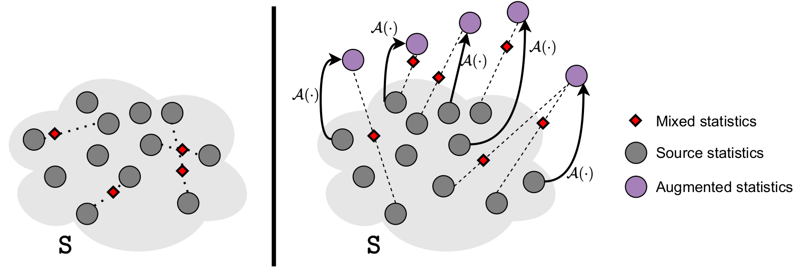

FAMix
A Simple Recipe for Language-guided Domain Generalized Segmentation
CVPR 2024
Main Idea: MixStyle can be effectively applied in a single domain generalization setting. It is sufficient to simulate the statistics (\( \mu \) and \( \sigma \)) of random domains using Prompt-driven Instance Normalization (PIN; see PODA) and mix original and augmented statistics.

Abstract
Generalization to new domains not seen during training is one of the long-standing goals and challenges in deploying neural networks in real-world applications. Existing generalization techniques necessitate substantial data augmentation, potentially sourced from external datasets, and aim at learning invariant representations by imposing various alignment constraints. Large-scale pretraining has recently shown promising generalization capabilities, along with the potential of bridging different modalities. For instance, the recent advent of vision-language models like CLIP has opened the doorway for vision models to exploit the textual modality. In this paper, we introduce a simple framework for generalizing semantic segmentation networks by employing language as the source of randomization. Our recipe comprises three key ingredients: i) the preservation of the intrinsic CLIP robustness through minimal fine-tuning, ii) language-driven local style augmentation, and iii) randomization by locally mixing the source and augmented styles during training. Extensive experiments report state-of-the-art results on various generalization benchmarks. The code will be made available.
Approach
FAMix qualitative results on unseen youtube videos
We test our model trained on GTA5 with a ResNet-50 backbone on unseen driving scenes from Paris🇫🇷, Beirut🇱🇧, New Delhi🇮🇳 and Houston🇺🇸.
Citation
@InProceedings{fahes2024simple,
title={A Simple Recipe for Language-guided Domain Generalized Segmentation},
author={Fahes, Mohammad and Vu, Tuan-Hung and Bursuc, Andrei and P{\'e}rez, Patrick and de Charette, Raoul},
booktitle={CVPR},
year={2024}
}
Acknowledgement
This work was partially funded by French project SIGHT (ANR-20-CE23-0016). It was performed using HPC resources from GENCI–IDRIS (Grant AD011014477).